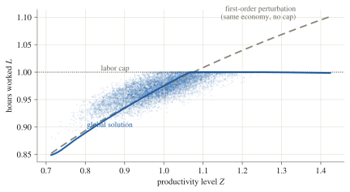
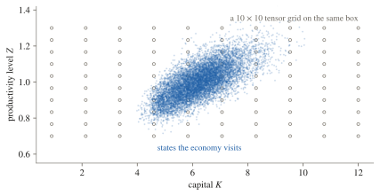
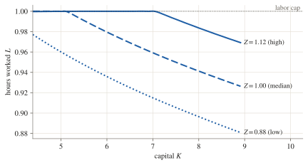
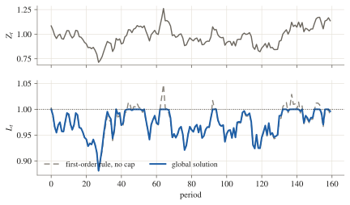
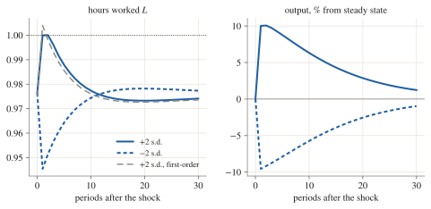
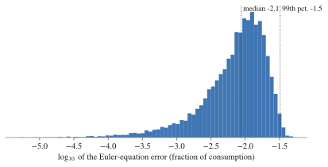
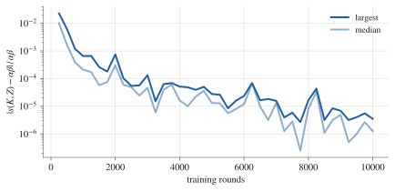

bm_labor_constrained, run configs/bm_labor_cap.yaml; dots: simulated periods). The global solution stops at the cap; the first-order perturbation without the cap (model bm_labor) crosses it.Along the simulated path hours sit at the cap in 16% of periods; the linear rule exceeds it in 13%.
The idea in three pictures
- States
- capital \(K_t\), log productivity \(z_t\)
- Decisions
- savings rate \(s_t\), hours \(L_t\)
- Preferences
- \(\mathbb{E}_0 \sum_t \beta^t \big[\ln C_t - \psi \tfrac{L_t^{1+\theta}}{1+\theta}\big]\)
- Technology
- \(Y_t = e^{z_t} K_t^{\alpha} L_t^{1-\alpha}\), \(C_t = (1-s_t)\,Y_t\), \(w_t = (1-\alpha)Y_t/L_t\), \(r_t = \alpha Y_t/K_t\)
- Law of motion
- \(K_{t+1} = (1-\delta)K_t + s_t Y_t\), \(z_{t+1} = \rho z_t + \sigma \varepsilon_{t+1}\)
- Euler equation
- \(\dfrac{1}{C_t} = \beta\, \mathbb{E}_t\Big[\dfrac{1 + r_{t+1} - \delta}{C_{t+1}}\Big]\)
- Labor, capped
- \(L_t \le \bar L\), \(\mu_t \equiv \dfrac{w_t}{C_t\,\psi L_t^{\theta}} - 1 \ge 0\), \((\bar L - L_t)\,\mu_t = 0\)
- Calibration
- \(\alpha = 0.36\), \(\beta = 0.99\), \(\delta = 0.1\), \(\psi = 1\), \(\theta = 1\), \(\rho = 0.9\), \(\sigma = 0.04\), \(\bar L = 1\)
What you write: the running example on one card. The capped labor condition becomes one Fischer–Burmeister equation, \(\sqrt{a^2+b^2} - a - b = 0\), zero exactly when \(a, b \ge 0\) and \(ab = 0\) (code).

bm_labor_cap) against a 10 × 10 tensor grid (circles). A tensor grid needs \(n^d\) points for \(d\) states; the number of simulated points does not grow with \(d\).Relation to familiar methods
| Method | Approximates | Accurate | Occasionally binding constraint | Many states |
|---|---|---|---|---|
| Perturbation | Taylor expansion at the steady state | near the steady state | first order: always or never binds (OccBin extends this) | cheap |
| Projection | sum of polynomials fitted on a grid or simulated points | where the points are | polynomials oscillate near the kink | tensor grid: \(n^d\) points |
| Time iteration | the rule at grid points, solved point by point | on the grid | checked exactly at each grid point | tensor grid: \(n^d\) points |
| This method | neural network fitted to equation errors | where the economy goes | one complementarity equation; the kink is slightly rounded | simulated points |
The example, solved
git clone https://github.com/deqn-jax/deqn-jax
cd deqn-jax && uv sync
uv run deqn-jax train --config configs/bm_labor_cap.yamlAbout 15 minutes on a laptop CPU. The registered model sets the cap at 1.02, where it never binds; this run configuration lowers it to 1.

bm_labor_cap). At high productivity the cap binds below a capital of about 7.
bm_labor_cap). In high-productivity spells hours sit at the cap, where the linear rule would exceed it.
bm_labor_cap). Hours rise only to the cap after a good shock and fall freely after a bad one; the first-order response crosses the cap.Can you trust the answer?

bm_labor_cap). Median \(10^{-5.2}\), 99th percentile \(10^{-4.4}\).
brock_mirman, run configs/brock_mirman_closed_form.yaml). After 10,000 rounds the computed rule is within \(3.5 \times 10^{-6}\) of it, relative to \(\alpha\beta\).Two limits. A small error is necessary for a solution but does not establish one: a model can have several solutions, and nothing here selects among them. Accuracy is measured on the simulated states; it is not a bound elsewhere.
Next
Write your own model from the three files of this example, or read the reference documentation and the source. If you use deqn-jax, please cite the two papers above.
Definitions and run settings
The Euler error is the gap between computed consumption and the consumption that would satisfy the Euler equation exactly given next period’s rule, as a fraction of consumption (Judd 1992), with the expectation taken by 16-node Gauss–Hermite quadrature. Its median is \(10^{-5.0}\) in periods at the cap and \(10^{-5.2}\) below it. “At the cap” means within 0.001 of it; hours never exceed the cap by more than 0.0002 on the path, and the labor equation’s absolute error stays below \(2.7 \times 10^{-4}\).
Each training round simulates 64 economies for 100 periods and takes 100 steps on the coefficients; the expectation in training uses 8-node Gauss–Hermite quadrature. The run used 20,000 rounds; the closed-form run used 10,000 and was saved every 250. Both ran on a laptop CPU (Apple M4 Pro). The figures come from scripts/dev/econ_figures.py, whose docstring lists the commands, and every number on this page is in figures/numbers.json.
Projection with simulated points is due to Judd, Maliar and Maliar (2011). There is no global analogue of the Blanchard–Kahn condition that would select an equilibrium; checks against perturbation near the steady state and against known special cases help.
References
- Azinovic, M., Gaegauf, L. and Scheidegger, S. (2022). Deep equilibrium nets. International Economic Review 63(4), 1471–1525.
- Scheidegger, S. and Bilionis, I. (2019). Machine learning for high-dimensional dynamic stochastic economies. Journal of Computational Science 33, 68–82.
- Blanchard, O. J. and Kahn, C. M. (1980). The solution of linear difference models under rational expectations. Econometrica 48(5), 1305–1311.
- Brock, W. A. and Mirman, L. J. (1972). Optimal economic growth and uncertainty: the discounted case. Journal of Economic Theory 4(3), 479–513.
- Coleman, W. J. (1990). Solving the stochastic growth model by policy-function iteration. Journal of Business & Economic Statistics 8(1), 27–29.
- Fischer, A. (1992). A special Newton-type optimization method. Optimization 24(3–4), 269–284.
- Guerrieri, L. and Iacoviello, M. (2015). OccBin: a toolkit for solving dynamic models with occasionally binding constraints easily. Journal of Monetary Economics 70, 22–38.
- Judd, K. L., Maliar, L. and Maliar, S. (2011). Numerically stable and accurate stochastic simulation approaches for solving dynamic economic models. Quantitative Economics 2(2), 173–210.
- Judd, K. L. (1992). Projection methods for solving aggregate growth models. Journal of Economic Theory 58(2), 410–452.
The software also has a citation file.